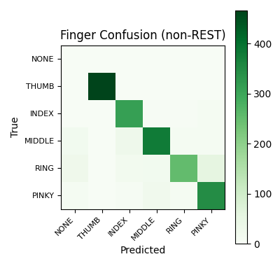

| Finger | Correct | Support | Predicted | Accuracy | Precision | Recall | F1 |
|---|---|---|---|---|---|---|---|
| THUMB | 466 | 466 | 466 | 100.00% | 100.00% | 100.00% | 100.00% |
| INDEX | 313 | 327 | 363 | 95.72% | 86.23% | 95.72% | 90.72% |
| MIDDLE | 380 | 443 | 424 | 85.78% | 89.62% | 85.78% | 87.66% |
| RING | 252 | 365 | 272 | 69.04% | 92.65% | 69.04% | 79.12% |
| PINKY | 346 | 393 | 416 | 88.04% | 83.17% | 88.04% | 85.54% |


{
"schema_version": 1,
"created_utc": "2026-04-04T05:25:16.158773+00:00",
"npz_path": "Projects/2-M16/subjects/2-M16/sessions/combined_20260319_081200_pruned_rest_events_0_1_2/processed/eeg_windows.npz",
"run_dir": "Projects/2-M16/subjects/2-M16/sessions/combined_20260319_081200_pruned_rest_events_0_1_2/processed/models/20260403_grouptrial_rest050",
"train": {
"avg_loss": 0.7438625701035375,
"action_acc": 0.8647540983606558,
"finger_acc": 0.8724133205426888,
"epochs": 60,
"batch_size": 64,
"lr": 0.001,
"seed": 43
},
"temperature_scaling": {
"action_temperature": 1.0,
"finger_temperature": 1.0,
"applicability_temperature": 1.0,
"fit_sample_count": 874,
"fit_non_rest_count": 771,
"has_applicability_temperature": true,
"source": "fit_on_holdout",
"metrics": {
"action": {
"nll_before": 0.4310529828071594,
"nll_after": 0.4310529828071594
},
"finger": {
"nll_before": 0.35804715752601624,
"nll_after": 0.35804715752601624
},
"applicability": {
"nll_before": 0.1862296760082245,
"nll_after": 0.1862296760082245
}
}
},
"test": {
"action_acc": 0.9182963928726641,
"finger_acc_non_rest": 0.8846539618856569,
"n_test": 2301,
"n_test_non_rest": 1994
},
"timing": {
"normalization_sec": 0.04907895900000003,
"training_sec": 70.702402416,
"avg_epoch_sec": 1.1783733736,
"temperature_fit_sec": 0.0811718330000133,
"test_inference_sec": 0.2107912080000034
},
"artifacts": {
"model": "finger_action_model.pt",
"scaler": "scaler.npz",
"preds": "test_predictions.npz",
"temperature_scaling": "temperature_scaling.json"
}
}